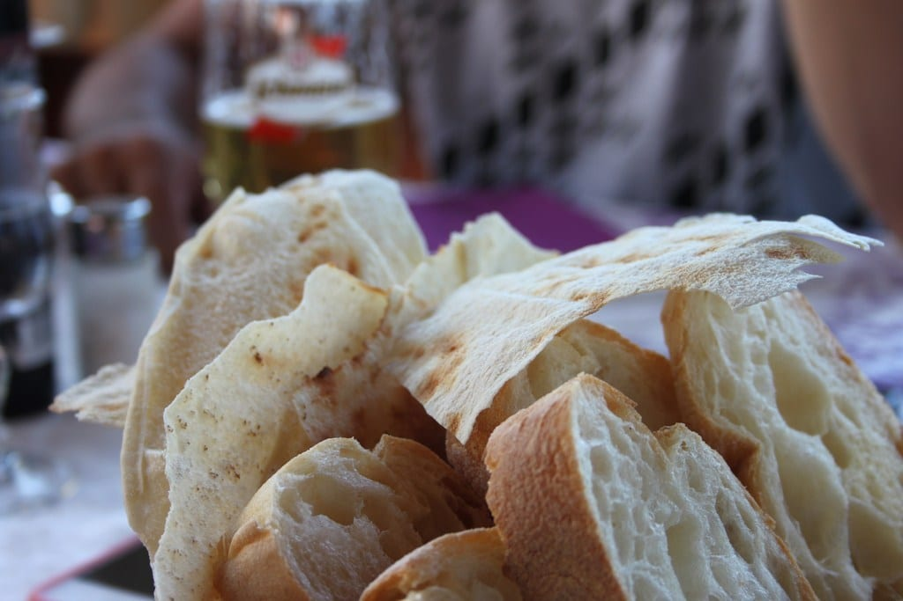
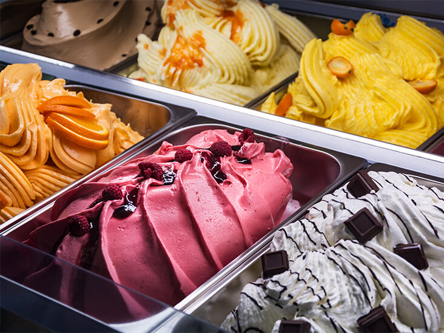
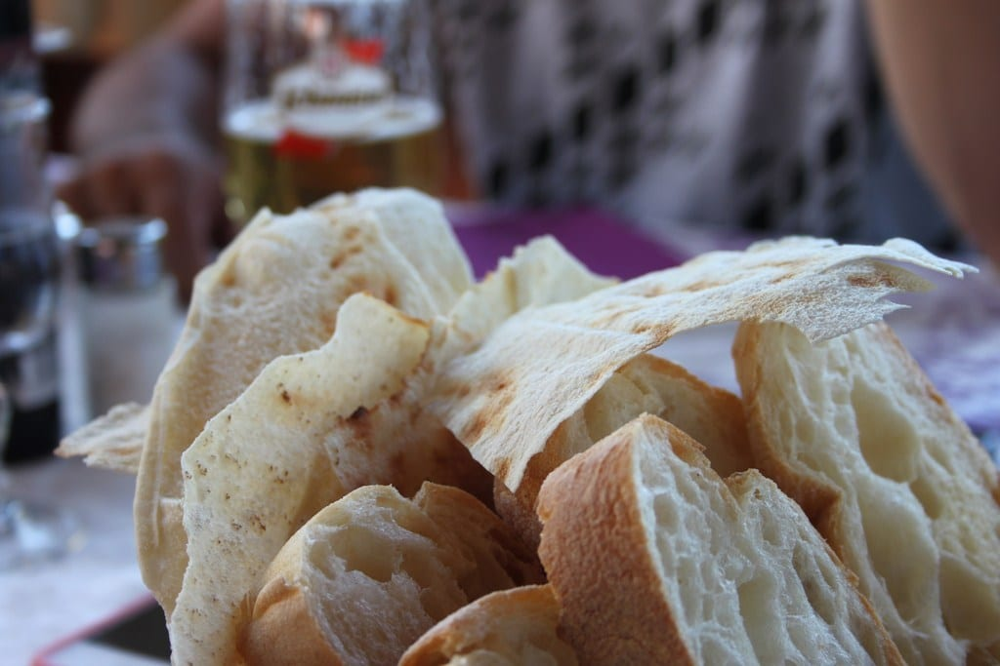
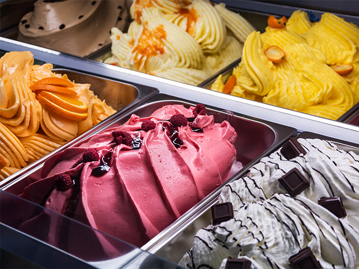

Its capital, Rome, is home to the Vatican as well as landmark art and ancient ruins. Other major cities include Florence, with Renaissance masterpieces such as Michelangelo’s "David" and Brunelleschi's Duomo; Venice, the city of canals; and Milan, Italy’s fashion capital.
Learn about David, Michelangelo's most famous sclupture| City | Population | Size | Tourists (2019) | Most Popular Place |
|---|---|---|---|---|
| Rome | 2,873,000 | 1,290 km² | 10,317,000 | Pantheon |
| Milan | 1,352,000 | 181.8 km² | 6,604,400 | Duomo di Milano |
| Venice | 261,905 | 414.6 km² | 5,590,500 | St. Mark's Basilica |
| Florence | 382,258 | 102.4 km² | 5,125,700 | Uffizi Gallery |

Here is a quote from wikipedia:
Italian cuisine (Italian: Cucina italiana, pronounced [kuˈtʃiːna itaˈljaːna]) is a Mediterranean cuisine consisting of the ingredients, recipes and cooking techniques developed across the Italian Peninsula since antiquity, and later spread around the world together with waves of Italian diaspora.
 


